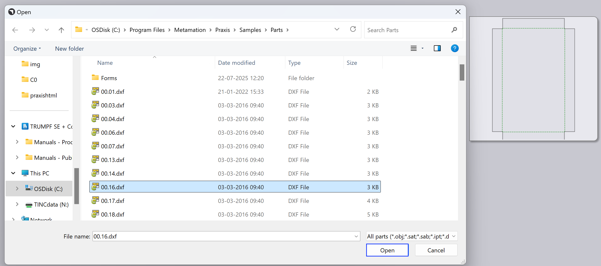
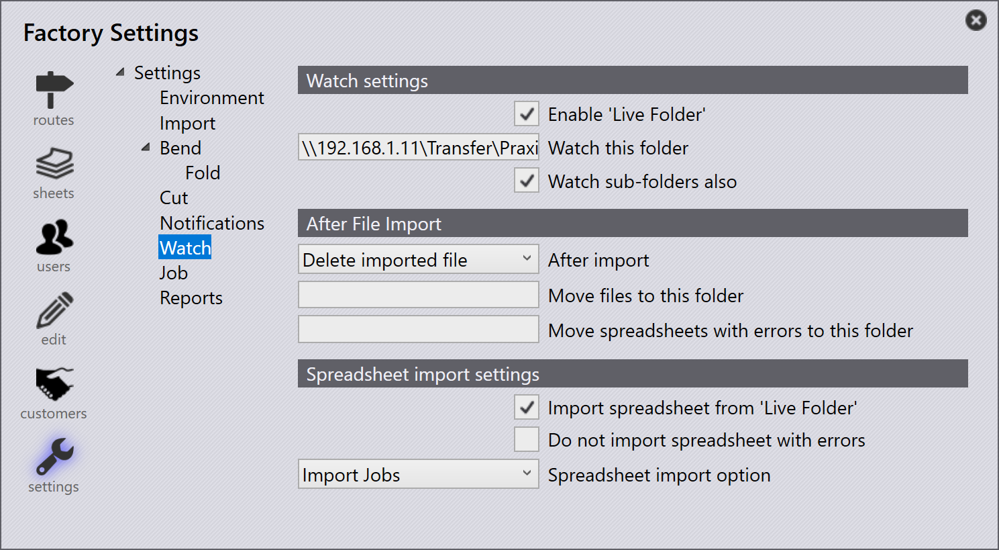

Importuj części
Przed importowaniem części upewnij się, że formaty plików są kompatybilne z TruSmartCAM. Zobacz obsługiwane formaty plików, aby uzyskać więcej szczegółów.
| Jeśli materiał i grubość nie są przypisane do części po imporcie, przypisz materiał za pomocą panelu części. |
Metody importu
Istnieją trzy metody importowania części do Biblioteki Części:
-
Import przez plik
-
Przeciągnij i upuść
-
Folder obserwowany
Import przez plik
Plik części 2D lub 3D może być importowany do Biblioteki Części za pomocą opcji Importuj detale.
-
Kliknij ikonę otwórz na pasku poleceń i wybierz opcję Importuj detale.

-
Pojawi się okno dialogowe Open — wybierz dowolny plik CAD (2D lub 3D).
-
Wyświetli się podgląd wybranego pliku CAD.

-
Wybierz wymaganą część i kliknij Open.
-
System automatycznie tworzy narzędzia dla części dla wszystkich dostępnych maszyn ze zaktualizowanym statusem narzędzi.
Przeciągnij i upuść
-
Przeciągnij i upuść plik części bezpośrednio do Biblioteki Części TruSmartCAM.
Folder obserwowany
Ustawienia obserwacji umożliwiają monitorowanie folderu pod kątem nowych plików i automatyczne importowanie ich do Biblioteki Części.
Aby skonfigurować, zobacz stronę Watch settings.
|

Konfiguracja importu
Użyj porównanie geometrii na tej samej korekcie CAD
Podczas importowania części z tą samą rewizją CAD, TruSmartCAM może porównać geometrię pliku CAD z istniejącą częścią.
-
Aby to włączyć, skonfiguruj Klucze wyszukiwania korekty (na przykład REV) w fabryka → ustawienia →Importuj/eksportuj. Następnie włącz opcję Użyj porównanie geometrii na tej samej korekcie CAD.

| Porównanie geometrii na tej samej rewizji CAD działa tylko wtedy, gdy Klucze wyszukiwania korekty są skonfigurowane. |
-
Teraz zaimportuj część do biblioteki części z określoną rewizją (na przykład Rewizja 1).

-
Ta sama część jest importowana ponownie z tą samą wartością rewizji.
-
TruSmartCAM porównuje geometrię nowo zaimportowanego pliku CAD z istniejącą częścią.
-
Jeśli zostanie wykryta różnica geometrii, TruSmartCAM wyświetla monit z pytaniem, czy:
-
Zamień zastąpić istniejącą część nową geometrią, zachowując tę samą wartość rewizji.
-
Pomiń pominąć import, zachowując istniejącą część i jej geometrię.

-
Umożliwia to użytkownikom aktualizację geometrii części bez zmiany wartości rewizji, przy jednoczesnym zachowaniu kontroli nad tym, czy istniejące części są zastępowane.
Zaimportowane części są automatycznie dodawane do biblioteki do dalszego użytku. Aby uzyskać więcej informacji, zobacz Library.